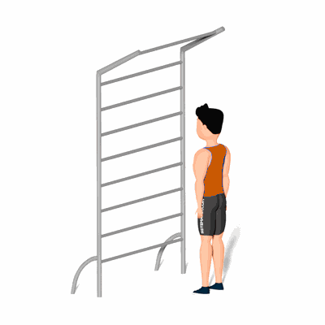

Alongamento da Posterior da Coxa

Exercício de alongamento para a posterior da coxa, preparando para a atividade física.
Ficha Técnica
Tipo: Alongamento
Grupo Muscular: Perna
Aparelho: Nenhum
Músculos: Nenhum
Como realizar
- Em pé e de frente para o espaldar;
- Coloque uma das pernas estendidas sobre ele e ir aos poucos inclinando o tronco para a frente;
- Mantendo sempre a coluna alinhada;
- Segurar esta posição pelo tempo previamente estipulado pelo professor;
- Repita para o outra perna.
 RC STORE
RC STORE